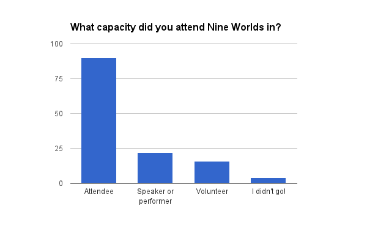
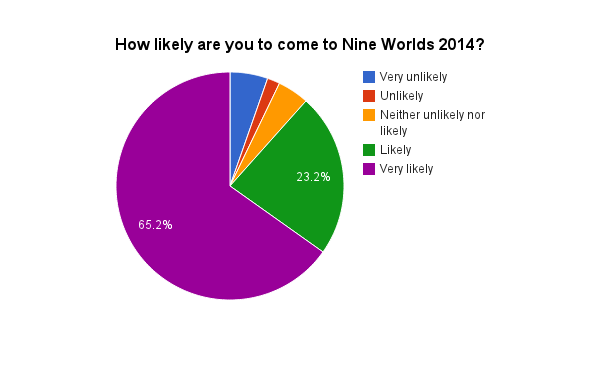
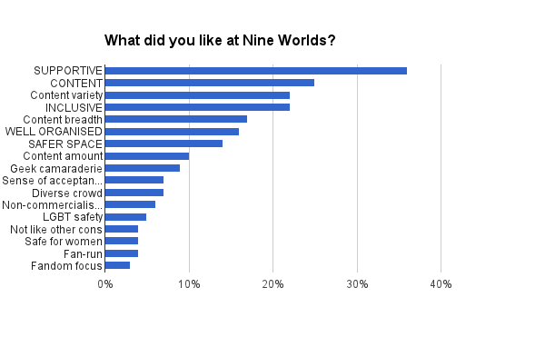
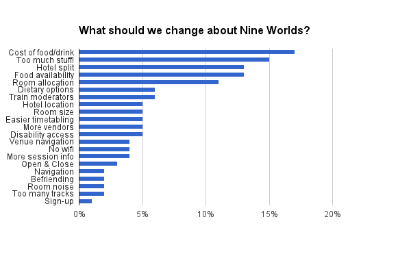

Table of contents
- How to read this report
- Feedback statistics
- What was good at Nine Worlds
- Suggestions for change:
- Bonus section - informal feedback
How to read this report
This page comprises a formal feedback report commissioned from an external consultant; statistics and graphs derived from the report; organisers' responses to the report contents; and a collection of informal feedback and responses (i.e. feedback not given via the survey):
- The formal feedback report was written as a summary of responses to the feedback form that was distributed online following Nine Worlds Geekfest 2013. The summary aims to give a balanced view of the opinions expressed by the 112 respondents to the form, regarding what was good about the event, what could improve, and suggestions for improvement.
- The feedback statistics were derived from the formal report, but are only partly representative of its detail, as there are often nuances of meaning that cannot be captured numerically.
- The organiser responses represent our thoughts on the feedback, and details of what we're doing to make Nine Worlds 2014 better. They're in line with the points that they respond to, rather than in a separate section.
- The informal feedback at the end of the report is included as a way of highlighting and responding to criticism on specific issues that were not present in the formal feedback. As with the organiser responses more generally, we've focused on responding to the points where change is requested or problems are presented.
The formal report was written by a business psychologist, Dan Cyrén Karlsson, and the original (without responses or stylistic changes, but with minor redactions to remove identifying information about individuals) is available for download as a pdf attachment at the end of this page.
The following styles are used to indicate different elements of feedback:
Section headings look like this
Main themes look like this.
Sub-themes look like this.
Quotes from respondents look like this.
Organiser response: looks like this.
Feedback statistics

There were 112 responses, from around 1500 attendees. Four respondents did not attend Nine Worlds - where appropriate their contributions were included in the narrative, but they were not included in the statistical analysis. Also, some people attended in more than one capacity, e.g. as a volunteer and a speaker or a volunteer and attendee.

“Thought it was fantastic. We've already bought 2014 tickets. Thank you for a brilliantly organised event.”
“Truly blown away by the awesomeness of Nine Worlds. After your 1st performance I would be happy to go to any Geekfest you set up!”

The capitalised items are main themes, and the lower case ones are subthemes.

The responses to this were considerably more nuanced than can be captured in a chart. A few themes are not included as the direction or unity of sentiment was uncertain.
What was good at Nine Worlds
Content
A general theme that emerged from the data was that a large proportion of the respondents (ca: 25%) thought the amount, breadth and variety of the Nine Worlds content to be a strong point.
Amount (10% of all respondents)
The amount of content, or more specifically the number of different streams, contributed to the feeling that there was always something going on. This sometimes led to people feeling slightly overwhelmed.
“The fact there was so much to choose from. From talks, to work shops and even larp”
“I loved the number of events that were on. It occasionally bordered on too many, such that I went almost the entire weekend without a break. I think that's testament to how interesting the sessions were though”
Breadth (17% of all respondents)
The breadth of the content offered during the event catered to a very large number of interests, which made the attendees feel well catered for and included.
“The attention to the diverse interests of everyone attending was clear and a model for other geeky gatherings.”
“The sheer scope of con was breathtaking.”
Variety (22% of all respondents)
Variety, meaning the different ways attendees could choose to interact with the content, was highlighted as a very positive aspect of Nine Worlds. The programme schedule was generally considered well balanced and inclusive with its mix of content, panels and content crossover.
“The programme was great: in most slots I had multiple things I really wanted to do, and the events I did end up going to were very good.”
“The fact there was always something to do if you didn't feel up to a talk and what like on any of the tracks you could just go play some board games.”
“Been going to SF cons (e.g. Eastercon) for a while and mostly faff with people in the bar / gathering areas, more so than attend programme items. However 9worlds had so much on offer that I rarely had time to stop and faff between an excellent programme schedule.”
Non-commercialism
Fan focus (3% of all respondents)
The maintained focus on fandom and catering to what fans wanted was highlighted a few times. Amongst other things, this included not having actors talking about themselves [instead of] their character.
“Keep the focus on the fans, fandom and individual creativity - not on celebs and big movie/game studios advertising themselves”
Non-commercial (6% of all respondents)
A few respondents experienced the non-commercial feel of the event to be very positive. No one was selling aggressively to them during the event and the fact that you didn’t openly give away any free tickets kept non-geeks and stag-dos away from harassing cosplayers.
“We liked that it wasn't just a cash-grab with the same old faces touting over-priced autographs.”
“[Keep] variety of tracks, vibe, lack of commercialism.”
“[Keep] the totally non-"corporate" feel to the event.”
Inclusiveness
Another big theme that emerged from the data was the reported sense of warmth, openness and inclusiveness that a large proportion of the respondents (ca: 22%) reported feeling. The atmosphere that was created at Nine Worlds touched many, and several reported on how welcoming the event was.
“I was worried about attending a convention alone for the first time since I was about 14, I shouldn't have been.”
Sense of acceptance (7% of all respondents)
Some respondents reported that the sense of acceptance at the event was striking. They felt that the atmosphere was friendly and non-judgemental; they could talk to anyone and not feel excluded because they weren’t of a particular fandom.
“I loved the open mindedness and sense of acceptance from every attendee and speaker, I felt really "at home".”
“Pls pls keep the inclusiveness and the safeness. I am so rarely me. So so so rarely.”
“The overall environment was so friendly and non-judgemental, I felt comfortable going up to strangers and talking to/making friends with/hugging them just because they'd said something interesting in a discussion or were cosplaying something cool.”
Diverse crowd (7% of all respondents)
Some respondents reported that the commitment to diversity, and the diversity of people present with the many different types of fandom they represented, contributed to the feelings of inclusiveness.
“[Keep] the same mix of panels, same entertainment and same awesome commitment to diversity and inclusivity.”
“We liked the mix of people that turned up - all ages and interests.”
“[Keep] variety, of topics, ages, activities, genders, ethnicities, costumes!”
Geek camaraderie (9% of all respondents)
Some reported feeling a sense of camaraderie of geeks at nine worlds. This was partly described as a consequence of bringing such likeminded people together, but also due to things like the fact that there was no V.I.P room for guests and that no matter what capacity you were at Nine Worlds as you were treated the same. There was also a sense of feeling valued no matter what level of geek you were and accepted.
“I felt welcome and valued and part of something. It was great!”
“I liked how safe it felt. I felt that nobody was going to judge me for my appearance or for not being a 'real' nerd/geek.”
“[I liked] the fact that I could try out new things and not be made to feel like an outsider for not knowing about it in depth.”
“I've never felt as much like I was walking inside of my own slice of the internet and fandom.”
Supportive atmosphere
Many respondents (ca: 36%) reported that the atmosphere created at Nine Worlds was very friendly, good, supportive and/or helpful. This ranged from help at the information desk to approachability of organisers and volunteers during the event. It was also reported that this rubbed off on the attendees, who were also considered nice and helpful during the event.
“The atmosphere was supportive and brilliant, and open and welcomin.g”
“Everyone was ridiculously friendly and helpful. Everyone involved in running the convention was literally magical - or at least I'm not sure how else they materialized next to me whenever I was feeling slightly lost or worried in order to help and direct me!”
“Keep the Super helpful Lady Loki! (Though new costume is permitted :D) and the rest of the fabulous volunteers - some of whom I still owe drinks too”
“Everyone was approachable, friendly, helpful and inclusive. It felt more like a family than a group of 'strangers in a strange land'!”
“The volunteers were insanely happy and helpful. There was a great community spirit, everyone being lovely to everyone else.”
“All the volunteers were really nice, which makes sense since they volunteered to help out at this awesome event.”
Not like the others
Some respondents (ca: 4%) pointed out how Nine Worlds stood out from other conventions aimed at a similar audience.
“Safe space for geeks and cosplayers - honestly, you guys are the biggest breath of fresh air in UK cons for a very long time.”
“I have heard [a noticeable amount] from long time old con runners: “They are trying to reinvent the wheel! I have been running [other conventions] for 30 years and they won't listen to my suggestions!!” Quite frankly, Good. It made it totally different, fresh and a much different atmosphere from every other con I have attended, and was my first convention in years BECAUSE of the atmosphere in other conventions.”
A safer space
Many respondents (ca: 14%) commented on how safe the atmosphere created at Nine Worlds felt. This sense of safety was felt by not just geeks, cosplayers and bronies, but also by vulnerable minorities from the LGBT communities, minors (under 18), and women.
“[Keep] Whatever you did to make NineWorlds safe, accessible & inclusive, as well as a place to challenge all the -isms and privilege in our media while still enjoying said media, please keep it up.”
“[Keep] The unremitting focus on diversity, acceptance, and safer spaces.”
LGBT Safety (5% of all respondents)
“[Liked] Diversity of content, inclusiveness, happy people. As a feminist queer woman I felt safe, welcomed and unexceptional.”
“[Keep] The explicit queer inclusivity. As a trans woman I felt safe and welcome throughout.”
“The explicit pro LGBTQ+ and feminist policies were really reassuring and also helped create an atmosphere that was fun, alternative and delightfully queer. People who didn't ID as queer in any way seemed to really pick up on this a go with i.t”
Safe for Women (4% of all respondents)
“I joked that it was the first Con where no one grabbed my tits. Although I was being flippant, it was true. Not one comment about my overlarge rack, no creepy overtures, none of the usual nonsense I used to put up with in order to have fun.”
“Since getting back from Nine Worlds I've kept stumbling over instances of casual homophobia or sexism in everyday life, that were particularly striking in contrast to how safe Nine Worlds was.”
Organised & Well run
Many respondents (ca: 16%) noted that the event was very well run. The check-in process was smooth, there was a high level of attention to detail, and the events started on time - making the even feel established despite it being its first year. Respondents particularly seemed to appreciate the pre-con communication, the tech support and the self-designed name badges (allowing for people to choose the name they wanted to go by).
“[Keep] Whatever magic pixie dust you used to make everything run smoothly and all the volunteers cheerful and useful at all times and all the attendees pleasant, friendly and respectful of each other.”
“It was SO well run, and I'm not even being sycophantic! The hive mind was second to none - it was so useful to keep in touch with what was going on.”
Run by fans (4% of all respondents)
Some reported that they really liked the fact that it was run by fans and the volunteering was appreciated by both volunteers and attendees.
“I'd definitely do another stint on the Friday reg desk. It's a great and fun way to get into the convention spirit.”
“[Keep] All the organisation, the volunteer team and the folk who programmed the streams - the content was good and it was smoothly run, so don't break that team up.”
“Please can I volunteer again next year? Please, please, please?!”
Enjoyment
Respondents also commented on the amount of fun and enjoyment they got out of going to Nine Worlds. The enjoyment seeming to come mainly from: the opportunity to connect with other fans; the opportunity to enjoy and/or partake in cosplay; and all the other fun people who were attending the geekfest.
“I genuinely think it may have been one of the best weekends of my life so far.”
“I cannot wait [for next year]! Congratulations to all of your track organizers, but especially to the three founders, you rock.”
“The whole atmosphere was great and unlike anything I have been to before. Had a great time!”
“I loved not only the breadth of content but the range of interesting people this event attracted.”
“Keep the awesome atmosphere, the great guests, the panoply of panels, the delightful dealers' room and well crafted cosplays.”
General suggestions for change
Some respondents made suggestions for changes that could be made to improve the general experience of Nine Worlds:
Event navigation (2% of all respondents)
Some thought that the signposting of events could be done better, especially during night-time. General navigation could be improved by using more visual markers, guiding people around the event, and written communication. Maps, for example, could be improved by using colour coding to divide the areas into zones, and there could have been some form of introductory session on how to best learn to navigate Nine Worlds. Different coloured lanyards were also suggested for organisers and volunteers, and so make it easier to find and ask information from them.
“The layout and signage at the Rad was a nightmare - it took us two attempts to find the rooms.”
“There were lots of very helpful volunteers who showed you how to navigate different areas and signage was generally good though something more prominent pointing you towards the lifts and the rooms they lead to may have been helpful.”
“Maps of the hotels' layouts were good and necessary, as were the timetables, but all of that had to be decoded to see the bigger picture. More bespoke maps (by which I mean, possibly colour coded and not-strictly-geographical) could help people feel their way around.
Using colour to 'zone' the areas of the hotel might help too — and what about taking the "Nine Worlds" thing further, and breaking the con into nine zones, using your own names to identify areas and connections between locations, rather than using the hotel's names?
Clear signposting, and a "one map to rule them all" that could communicate at least some of that coherence and connectivity, would help people (well, would have helped *me*) feel my way around and understand more of what I couldn't directly experience.”
Organiser response: We’ll be adding a lot more signage towards rooms and routes around the hotel this year, as well as publishing large maps of the venue in the programme and in the hotel. We’ll also label programme room doors with the programme items going on in that room, and we’re open to more suggestions as to what else we can do to make navigation easier.
Event sign-up (1% of all respondents)
A couple of respondents felt that Nine Worlds could benefit from a more centralised way of signing up to events. They felt that handling it stream-by-stream lead to unfairness, as they couldn’t sign up to events that were full but later met others who had signed up after them. There were, however, respondents who felt that the autonomous control for individual stream-heads was great.
Organiser response: We’ll likely keep these focused around the track rooms, but we’ll make sure to communicate sign-up times more clearly
Welcoming & Closing ceremonies (3% of all respondents)
Some thought that it would’ve been nice to have opening and closing ceremonies, or something along those lines, to greet and then thank the organisers and volunteers properly. This could also function as a befriending event for people who felt ‘not geeky enough’ or who came alone to Nine Worlds.
Befriending event (2% of all respondents)
Some suggested that a befriending event of some sort of effort to introduce people into the event and to other attendees would have been beneficial. Some reported that it was hard to find people to spend time with if they had arrived at Nine Worlds alone and so would have like to see more group-based activities or a meet-and-greet. One respondent suggested having a ‘chat zone’ that was not the bar.
Organiser response: We love the idea of a befriending event near the start for folks to meet each other, and we’ll definitely run that. Lots of the tracks ran social sessions at the start of the convention, and we’ll be keeping those, as they were also a great way to get to know the track organisers and other guests. Closing sessions are tricky as so many people leave at different times, but we’ll have a think.
The Venues
Generally good feedback about the venues involved the general quality of the hotels and the spaces they provided – a good tech room and dealers' room were pointed out as particularly good. There was however some inconsistency in opinion between the two hotels, with the Renaissance seeming more popular than the Radisson on most accounts.
“Keep the hotel - one of the nicest for conventions I've seen, normally hotels are rubbish to stay in for a day, they normally don't expect you to be there past 9am.”
“We loved the relaxed atmosphere of the Renaissance, the open plan foyer / lobby / bar area created a great atmosphere for catching up with old friends and meeting new ones. We spent some time at the Radisson, but the atmosphere just wasn't the same there (and I can't see how the layout there would lend itself to the same atmosphere).”
“The venues were classy of course and we liked that the focus was on fans, not big business.”
“Setting it in two hotels was either a stroke of unbelievable genius or an exhausting problem; I'm still not sure.”
Issues with the venues
The split between hotels (13% of all respondents)
By far the largest problem with the venues, that respondents pointed out, was the fact that there were two of them. There was a general feeling that the tracks in the Radisson suffered from not being in the “main” hotel and the nice atmosphere that was so successfully created at Nine Worlds didn’t quite make it to the Radisson in the same way. There were some complaints that the road between the hotels didn’t feel safe (for cosplayers mainly) and it was too far – especially for people with mobility issues. Overall the consensus is that one hotel would be better than two.
“I never went to the 'gaming' hotel once (think it was the Radisson - where the boardgames were). It always seemed easier to stay at the Renaissance and go to sessions there, a shame really as this felt like splitting the community. Put them in one hotel.”
“Our experience was definitely skewed by being in "the other hotel". […] Obviously splitting the con into two venues was never going to be ideal, but I think it created (for us; from our perspective) a "distance" (both literal and figurative) from the heart of things, which was as shame. Putting Nine Worlds together was a huge and impressive achievement, and creating something genuinely whole and coherent from all its many parts was always going to be very very hard.”
“The split across 2 venues was awkward, and meant the tracks in the 2nd hotel ended up having fewer people than they should have done. In particular this made board games worse as people couldn't just drop in.”
“Two hotels was a big mistake - it really needs to be under one roof. If it's two in future, I wouldn't attend.”
Organiser response: We’ll be in just one venue this year, with lots of signposting!
Out of reach (5% of all respondents)
There were several mentions that the venues were a bit out of reach in terms of accessibility. This was especially true for those staying off site, as long travelling times meant that they could partake in fewer events. One problem that related to this was the fact that the hotel rooms were seen as a bit pricy. It was wished that Nine Worlds provided more information about cheaper hotels in the area, which were easier to get to and from, or have some sort of service where people could sign up together to share hotel rooms and so make staying onsite easier. Ideally the venue would be closer to central London, to make commuting easier, but most respondents understood that this perhaps wasn’t possible.
“I suppose this can't be helped, but the location was rather bad for me, as I had to make my way in from Hackney every morning.”
“It wasn't so much didn't like but it was the fact I couldn't get to all the events put on. Due to having to book a hotel somewhere else in London I had to leave the venue at about 8/9 missing quite a fair bit.”
“[Non-attendee] It was all the way out at Heathrow on a weekend when the tube lines were all kinds of crazy hell. [Have it] closer into the city - at least Zone 3 please.”
“More guidance on which cheap hotels were nearby would have been nice - I ended up booking the Travelodge and having to get a bus in (or walk for over half an hour) to the main hotels, during which time I passed several other budget hotels and felt irritated about it.”
Organiser response: We're intended as a residential convention, i.e. one where the majority of attendees stay in the convention hotel. However, we're also aware that this can add quite a bit of expense and may people who actually live in London may prefer to travel home. We're looking at other options in the longer term, but there's currently a lack of equivalent space in the centre of London, as most hotel venues (e.g. the Metropole) are much more costly, and expo/conference venues require a substantially different finance model and tend to have a different atmosphere and sense of community.
Hard to navigate (4% of all respondents)
Respondents thought that the venues were sometimes hard to navigate. Fortunately, there were a lot of helpful people around, but respondents still felt that some better signposting would have helped a lot. The road between the hotels was also somewhat hard to navigate and some clearer signposting would’ve been helpful, according to the respondents.
“I got quite lost when entering the hotel for the first time, and had to ask a couple of people for directions on how to find the registration desk! Everyone was very helpful and nice, though.”
“The signposting at the Radisson Edwardian venue wasn't great.”
Organiser response: Sorry about that. We'll do better this time, promise!
Room for improvement (5% of all respondents)
The rooms in the Renaissance hotel were considered to be a bit small and the ventilation was not able to keep the room at a comfortable temperature. Having rooms with air conditioning was considered a desirable change.
“The upstairs rooms in the Renaissance were too small & had rubbish air con.”
“The venue. It should have larger rooms (with better air con).”
Organiser response: We're in the Radisson this year. Also, the upstairs rooms in the Renaissance are being removed so won't be available for future conventions.
Noisy Radisson (2% of all respondents)
There were also some complaints about the noise levels in the Radisson rooms:
“The walls in the Radisson are very thin, so putting a role play session next to a panel did not work - people in the panel audience couldn't hear. Also letting people come in late is fine if it's easy and quiet to get in, but if - as in Rad C and D - the door sticks and the corridor outside is full of hotel staff banging crockery and (quite fairly) getting on with their jobs, it doesn't work”
“The room for the talks in Radisson weren't so good with the divide between meaning you could hear the other talk if it got loud and doors into those rooms were hard to open once they were shut.”
Organiser response: We're unlikely to be using the dividers in the Radisson rooms this year, which was the cause of complaints about noise leakage.
No WiFi (4% of all respondents)
There were some complaints about the price and availability of wifi access in the hotels. Several respondents thought it was way too expensive and hoped that it would ideally be freely available next year.
“I know it has been mentioned by others and is probably a non-starter, but access to wifi was expensive for punters - we geeks live by our tech! Maybe the hotel just doesn't have the facility for so many accessing at the same time, but couldn't they do a deal, rather than charging such a high price for individual wifi access? It might complicate things, but perhaps people could by a discounted wifi ticket separately from their con ticket.”
Organiser response: The Radisson has free wifi. There may still be some trouble with connectivity as most wifi networks simply can't cope with the density of people at a typical convention, but we'll do our best to work with the hotel to alleviate this.
Food & Drinks
General thoughts on food and drink provisions and availability at Nine Worlds were that the water provisions were very appreciated but the availability of food, especially affordable food, was bleak.
Water (4% of all respondents)
The water was very appreciated, especially since the smaller rooms could become rather hot due to the lack in air conditioning. There were some comments about the topping up of water jugs in the track rooms to keep availability up and one suggested that room gophers in charge of such a thing would be a good idea.
“Also liked - a small point but vital that you provided a table with water on such a hot weekend!”
“The water stations were excellent, although keeping them topped up was sometimes an issue.”
“[Keep] the availability of water on the tables for everyone.”
“[Have] water and cups in every room, topped up after each session. I got so dehydrated over this weekend, even though I drank as much as I could manage every time I found a full water jug.”
Organiser response: We're planning on doing this again! Also, we think the rooms will be less overheated this time round.
Expensive Food & Drink (17% of all respondents)
Respondents felt that the availability of affordable food was scarce at the hotels and the surrounding area and some people (e.g. volunteers) didn’t have time to go to and search for the more affordable options. It was suggested that more information about the food situation would have been great. If respondents would have known about it beforehand they felt that they could have dealt with it better. It was also suggested that some sort of Nine Worlds run option was made available for next year or that better prices were negotiated with the hotels.
“Limited and expensive food was a real challenge for me because I can't eat McDonalds. It was hard to get snacks, lunch and coffee - only really Starbucks - which had huge queues :( Meals at the hotel bar were extortionate, and there wasn't much range.”
“Food was a problem. It was hard to eat without spending a fortune.”
“Food/catering was kinda crappy, unfortunately - Starbucks vs incredibly expensive hotel bar :( ”
“There wasn't anywhere nearby to get decent, affordable food. Decent food was expensive (hotel bar), affordable food was *deep breath* McDonalds :-/ ”
“Speaking of meals, some affordable food on site would be great! I brought homecooked meals in Tupperware because I couldn't afford to buy the food there but there was no refrigeration in the rooms so by Sunday afternoon it was mouldy and I went hungry.”
“I don't know if it would be feasible, given the obstructive attitude of the Renaissance, but some sort of provision of AFFORDABLE sandwiches etc for organisers/volunteers, would be useful: something quick for those too busy to have proper meal breaks. If the R won't play ball, could you not arrange it yourselves, even if it means stocking up on supermarket sandwiches and selling them at cost from a designated area? I know Ludi gave up her room as a tea zone this year, so maybe something similar in a designated area? On the books panels, for example, guests often cried off at the last minute and Jenni had to find replacements at short notice, which meant stand-ins might not have time for food breaks and an instant sarnie or some-such would have been welcome under such circumstances”
Unavailability of Food (13% of all respondents)
Respondents felt that the range of options in regards to food was a bit scarce as well. The hotel and nearby food sources seemed unprepared for the amount of people attending the Geekfest and waiting times were considered outrageous for some respondents. Even nearby supermarkets sold out and it might be worth contacting them individually to warn them that Nine Worlds is happening. Also, respondents would’ve appreciated information regarding where in the nearby area food was available. Generally, there was a consensus that it would be great if you could provide more food for attendees and volunteers.
“The lack of good places to eat was not really something that could have been addressed, but might have been worth warning about - those disliking the hotel food really had nowhere to go.”
“Lack of food options, Starbucks was ridiculously overpriced and you had to wait for hours, hotel restaurants said that they are too busy and you needed to wait 40 min for your food and the restaurants outside were full.”
“They obviously couldn't cope with the numbers and didn't seem to care. They didn't even seem to have enough staff, even though they must have known they would need extra staff for such a function! I know about the debacle over providing food, but there was nowhere to get an affordable quick snack (apart from rip-off Starbucks) - running tracks back to back meant there was no time to get lunch etc, so I kept having to make trips to the garage over the road to get sandwiches. […] We're both vegetarians, so the choice was limited as well.”
“The paucity of food options was becoming a bit of a problem by the end of the weekend - I didn't want to go further afield and miss a panel - but I'm not sure there's much you could've done about that (possibly a note on the website suggesting people bring fruit/vegetable based snacks?)”
“Access to food was a bit limited - queues everywhere were long so it made it hard to get something and get back during a break.”
“Telling co-op that we're coming so they don't run out of sandwiches.”
Organiser response: As some attendees are aware, we were unable to agree suitable food options with the main host hotel last year, and although we repeatedly warned local food outlets, the warnings didn't seem to get taken very seriously or passed on to the right people. We're in a different primary hotel this year, and believe that negotiations will be more productive this time round. We published a guide to local food options in the programme last time, and we’ll update this with more information about what’s available. We’ll warn the local shops and the hotel that we’re expecting large numbers, with added credibility given the scale of demand they ran into last time, and we’ll reinforce the message that bringing snacks is a good idea.
Special dietary requirements (6% of all respondents)
Some respondents felt that, among the already sparse food options, there were very few options catering to special dietary requirements (e.g. lactose intolerance, vegan and vegetarian). There was also a lack of kids’ foods in the hotel restaurants and anyone who had a special dietary requirement didn’t have much information on where to acquire appropriate food.
“The only issues I had were that the provision for vegans by the hotels was pretty bad. I ended up doing food runs for the vegans that were there.”
Organiser response: We're sorry about this. Although we're reliant on host hotels, we could do better at researching and laying out the food options, which would also give us a better basis on which to push the hotel to improve its options. We're aiming to do better this year, and are hopeful that we'll have more leeway to agree a convention menu.
Tracks
The general response to tracks at Nine Worlds was very much positive. The variety of streams and tracks made most respondents feel that there was always something to do. There were a fair few comments on how helpful the volunteers and organisers were, and a couple of comments on how quickly any complaints were dealt with. The general themes that came out of the feedback mainly related to how much attendees were enjoying the different track items, but also how they were trying to cope with the remarkable amount of items available to them at any point in time and how it could be made easier for them to make it to as many items as possible.
Talks, Panels & Discussions (8% of all respondents)
Several respondents highlighted the interesting talks, discussions and panels as being a very good at Nine Worlds. They highlighted the quality of speakers, the kind guests and the mix of people, with different levels of knowledge included in the discussions, as particularly good about this. The seminar-style discussions felt informal in panels and workshops, and this was appreciated.
“[Keep] the marvellous range of panels on loads of different subjects.”
“I liked the amount and pure quality of the talks. What makes it different and stand out compared to LFCC and MCMCC is the talks.”
“Loved the selection of speakers and that you really managed to get good does-X-and-is-a-Geek folks from outside of traditional fandom.”
“The panels were really interesting and had a informal feel, which made the panellists really approachable.”
Item distribution
The way the schedule was organised was appreciated by some and a source of slight frustration for some. The frustrations were mainly linked to the fact that there were so many things on at once that many of the items respondents were interested in clashed. A couple of respondents thought that the event could benefit from more evening entertainment for onsite guests, and more prominent guests and other events later in the weekend as most seemed focused in the beginning of the weekend. It was also recommended that the organisers should try to freeze time itself and so make the event last longer.
“Lack of evening stuff to do after 11pm”
“Too many of the "headline" events were on Friday, and too few on Sunday - I couldn't get Friday off work & felt like I missed half of Nine Worlds not 1/3.”
“Please stop time advancing so fast. I keep running out of time everywhere to do things :) ”
Gaps between items (5% of all respondents)
Respondents generally reported that the gaps between items were a good size. There were some suggestions that there could be different sized gaps in some parts of the day to allow for lunch and more socializing after popular items without missing any other items.
“[Keep] The gap between items, - unless the two hotels are much easier to get between and there is less on, otherwise the gap can kill the atmosphere.”
“The gaps between sessions was a nice way to have a bit of a breather and decide what to attend next.”
“I'd suggest maybe varying the lengths of the breaks - like, instead of every break being the same length, alternating between, say, 20 and 40-minute breaks, to fit in the same amount of programming but give people more of a chance to get food etc between panels.”
“The gap between sessions - half an hour - was too long, especially if you were staying in the same hotel.”
Item slot sizes (4% of all respondents)
Some respondents, especially fans of the RPG and gaming tracks, felt that the timeslots could have been differently sized depending on how much time they needed, as some items felt too short and other didn’t have enough to fill their slot. There were however also comments on how lined up timeslots made it easier to meet up with friends afterwards if they went to different items.
“Sometimes it felt that 1 hr 15 mins was too long for some of the sessions - particularly when there was lots of talking by the panellists but little input from the audience. Big Finish was one of these as was Harry Potter Might and Prejudice. However, on other occasions it sometimes didn't feel like long enough!”
“The slots for running RPGs were rather short. It was a challenge to run a 4-hour module in a 3-hour slot. I'd be tempted to keep the gaming slots as they were. While it was a challenge to run a 4-hour game in a 3-hour slot, I very much enjoyed having the larger breaks between games. It gave me time to wander around the Con and I didn't have to rush to fit in lunch or dinner.”
“The session times lined up for different tracks, meaning it was easy to go to different sessions to your friends and meet up again afterwards.”
Too much stuff at the same time (15% of all respondents)
As previously mentioned, the variety of tracks and items available to attendees were much appreciated. However, there were respondents who felt that items they wanted to attend clashed too often and that other timeslots were left empty of things they were interested in. Also, some of the bigger items from the same tracks clashed with each other. Some suggested distributing the ‘likely to be large’ events more evenly throughout the schedule.
“(This is sort of praise too), there were just too many awesome things happening at the same time, whilst at other times in the schedule it was like "well, I can go to that I guess". This was something I heard many other attendees mention, so perhaps sharing the timetables of different tracks with each other earlier might help this?”
“The overwhelming amount of content made it a little frustrating to be missing so much good stuff. Maybe [have] slightly less going on / shorter slots.”
Too many tracks (2% of all respondents)
A few respondents felt that there were too many tracks at Nine Worlds. Most recognised the variety as a good thing, but reckoned that it could be streamlined for next year without affecting the quality of the event.
“Too many rooms, offering too many events. It felt unfocused for a first year, as too much was on offer”
“I wonder if there were too many tracks. There were so many things going on - and that is a good thing, but some could have been pooled together to keep it simple and streamline it. Fewer tracks would condense the glory and maybe keep it small enough for one hotel?”
Organiser response: Partly as a consequence of moving to just one hotel this year, there'll be very slightly less going on at any one time. We're compensating by extending the length of the convention, and will still have a truly vast amount of stuff going on.
Room distribution (11% of all respondents)
Some respondents felt that there was a mismatch between the popularity of an item and the size of the rooms given to an item. Popular items filled up very quickly as they were set in the smaller rooms and the limited amount of chairs and space made it difficult to seat everyone that wanted to attend. Meanwhile, some less attended items had bigger rooms. There were suggestions made that tracks could benefit from planning room usage after the item required to have the desired outcomes, like keeping items meant to have smaller discussions between attendees in smaller rooms and keeping bigger talks in bigger rooms. It was also suggested that designating areas to either types of items or by tracks might make some easier to find. In addition, there were some mention of having consideration for the sound levels of each item and the sound levels of the items next door, as some were disturbed by noise levels of others.
“Some of the panels were so popular people were packed like sardines and others had to be turned away.”
“I would ensure that visitor numbers pair up to the sizes of given rooms - but I understood from the start that this would take some fine-tuning. It was often seating room only on the ground floor of the Renaissance, and this did get quite sore, but I really appreciated efforts to bring extra chairs in mid-panel.”
“When there is going to be a bias towards a particular medium state it in the description both on Lanyrd and on the site/booklet. Reserve the theatre space, assuming you use the same hotels, for movie showings or something you know from this year will have a BIG attendance like the science in science fiction. I was in there for the Four Houses or One thing on Sat morning and it felt almost entirely empty. Felt bad for the speaker though he went on fantastically regardless.”
“[…]Bigger audiences seemed to be more appropriate for longer, more academic talks that took one topic and went very deep with it and panels sit between the two (in terms of audience size and what gets covered) - some events mixed these up a bit too much and didn't get the dynamic right for the topic or audience size (whereas others were spot on). I'd try and be stricter about group sizes when necessary - being packed into a tiny room with something like 50 people for Feminism in the Whedonverse was quite uncomfortable and I wanted to hear as much from the audience as the panel, which was hard with so many people.”
“The skeptic track needs a bigger room (hardly a spare seat in the ones we attended).”
“Fewer talks, bigger rooms. Try to keep the talks to one place.”
“Make more effort to balance recruitment of attendees to games as well as talks. (Some more mixing between hotels might have helped here; part of the problem was that it was exhausting to go back and forth from game to talk, and nobody wanted to miss the seminars. Putting, say, the Potter talks in the same hotel as the Potter live game would have helped.)”
Make it easier to keep track (5% of all respondents)
Some respondents felt that a few things could have been done to make it easier to choose and keep track of items during Nine Worlds. One repeated suggestion included giving attendees a planner page or empty template schedule to fill out for themselves to better keep track, as the programme schedule was so massive that looking up items a second time required a lot of additional stationary. Alternatively, provide the stationary and more tips on how to plan better. Others suggested that an app that worked on most handheld devices, doing a similar thing, would have been an ever better solution. Additionally, it was desired that you made any changes to items more visible.
“I didn't like that I couldn't go to as many talks as I'd like. Perhaps that's my own fault for not organising it better. Perhaps make it easier for us to organise which talk we would like to attends. A clearer schedule/calender. Maybe even a dedicated app to help organise. Couldn't get the Lanyrd app on my android so I couldn't orgainse as well as I liked.”
“An app with the schedule would be better than that Lanyard thing - Eastercon had a really good app a couple of years ago which included the Twitter stream etc, can't remember what it was called).”
“On the programme, it was hard to work out what some things were. I spend ages going through the programme and matching up the events with the tracks. It would have been very helpful if each programme entry had begun by stating what track it was part of.”
“The programme was rather difficult to decipher. With over 400 events, finding specific things (or re-finding them) was quite hard. It was hard to know where/what was happening. Also there wasn't really enough time between events to move around. Perhaps a blank timetable in the back of the booklet that can be filled in with events that attendees want to see?”
“Add a schedule of each room to the room of the door and an empty template in the registration bag for people to fill in their sessions for the weekend.”
“Produce the schedule in 2 formats - one mapping room vs time, the other mapping track vs time - and give people copies of both.”
“Also I noticed some tracks had produced one-sheet fliers listing and linking together events on their track - could this also include academic talks, where relevant? Maybe suggest to the academics and track-organisers that they try to coordinate their events a bit more (as an academic speaker I'd be very happy to talk to whoever about whatever).”
“The only real organisational issue I ran into was the Buffy singalong, which was moved without my (or a few others) awareness. We were waiting in the bar for 15 minutes before we went to speak to organisers and found that it was moved, but no one had gone to the bar to tell us. We missed songs as a result, but as it turns out, the pianist ran through the full episode a second time because we raced through the first. So, no biggie, really.”
Make it easier to pick (4% of all respondents)
One issue that repeatedly came up was that the item title and description didn’t quite match the item contents. Respondents felt that they wanted to know: what the item was about; which track it belonged to; what type of item it was (e.g. interactive, talks, etc.); what sub-type of any fandom it was (e.g. TV series, books, etc.)’ and recommended level of prior knowledge of the item topic. Some respondents reported feeling tricked when they discovered during a session that an item wasn’t what they’d thought and didn’t have time to go to move to another session.
“Several of the skeptics track sessions, in particular, were not what the programme summary suggested (eg: the "old wives tales" one).”
“Some of the panels you'd go to, not on the book track, seemed to focus almost entirely if not entirely on books. Which is fine but it should have said so in the description or Lanyrd if decided at a later date. I went to the one about the future in SF being so binary and it was literally entirely about books.”
“The titles of most events were puns. Which was glorious naturally, but it made it sometimes difficult to quickly identify what was going on. With the huge number of events that were going on, maybe have a clear declarative title with a pun subtitle?”
Train facilitators (6% of all respondents)
Some respondents felt that some facilitators and moderators could have benefitted from some amount of training. These were mostly small things that needed to be addressed, like how to use equipment and tech and general tips on how to make facilitation better. There was also a desire for item facilitators to go over: what the item was about; which track it belonged to; how much involvement was expected; the range in sub-type of any fandom it expected to cover (e.g. TV series, books, etc.); etc. at the start of the item.
“Train people in how to moderate panels effectively. I don't mean this in a negative way at all, but some of your moderators were just fantastic and others could really do with learning from them.”
“I'm not sure if it happened this year, but a strict style guide or maybe training session should be given to facilitators […] would be brilliant.”
“[One panel's] facilitation was appalling- the facilitator repeatedly interrupted panel members to give his own opinion, took questions from the audience and answered them himself without asking the panel and derailed the conversation.”
“One panel I went to was badly moderated. People had interesting things to say but they were off-topic and some didn't have much chance to speak. Maybe some or better training/briefing for panel moderators”
“The PG label needs re-iterating to all speakers - I know many of them are just normal folk and it might not be at the front of their mind to watch their language, but a simple re-iteration of 'no swearing' by the lead moderator, and it being picked up by the moderator first time it happens, would have gone a long way in some of the sessions.”
Organiser response: Thanks for everyone’s patience with the complicated programme! We’ll be publishing the programme details in order of tracks next year, rather than in order of time, which we hope will make things easier. We’re planning to keep the 30min gaps between sessions for simplicity (and having received positive feedback on them from people for whom long breaks improves their access to the event.) We’ll also definitely include a page for notes in the programme. On the request for a scheduling app, Lanyrd has Android and iOS apps. However, we're looking into further options for apps, and in general, will try to keep on making the programme as easy to read, and accessible, as possible. On the issue of moderator guidelines, this is at the top of our list for next year: we’re so sorry about the problems, and many thanks for bringing these to our attention. On the issue of matching item popularity to room size, we'll do our best, but it's just not always possible to predict which sessions are going to blow the doors off! Finally, the academic track is no longer acting (entirely) as a standalone, but as a co-ordinating for other tracks role. This should fit with the request for better co-ordination.
Stalls
Good range, good amount (5% of all respondents)
Feedback about the stalls was overall positive and they provided an opportunity for attendees to explore geekiness from other fandoms than their own.
“The opportunity for casual interest in geekiness that would normally be peripheral to your favourite strand.”
“The very wide range of strands. The timing of talks / panels with enough time in between to get to where you're going next without hurry.”
“I like the fact that there weren't too many vendors. That can be left to LFCC and MCMCC where there have massive exhibition centres. I've come to see talks, learn new things and meet different people. I can buy stuff from the other places.”
Room for more (5% of all respondents)
There were some comments suggesting that the vendors area was too small and that keeping the vendor areas separate made it harder to find the once not in the main area.
“Have more vendors (e.g. a dvd stall?) and all in the same area, please.”
“The RPG publisher at the Radisson Hotel was based in a room that was so hard to find that someone had to take us there, which was a great shame for him.”
“I'd also like to see one integrated vendor area, rather than the steampunk people all being off in their little basement.”
“Have an art gallery and sale/auction!”
Organiser response: Thanks for the thoughtful feedback on the stall locations: we’ll be keeping all the vendors in one large space next year, to make it easier to find them, and we’ll be signposting the vendor hall more clearly.
Access
Families and children (3% of all respondents)
Access for families with accompanying children was generally considered okay and the event was seen as child friendly. There were some suggestions for improvements; mainly involving an introduction of childcare facilities that some respondents felt was missing. Some respondents thought the pricing structure for families was too expensive since there were no dedicated activities for younger children.
“[…] A few people commented on the high price of the kids' tickets - some partners and kids had stayed away because the cost of tickets for two adults plus two children was too high, but both parents would have come if kids were free or a nominal charge up to the age of about 12-14 - particularly when there wasn't really any dedicated activities for younger kids. Most music festivals only charge 'admin fees' (i.e. about £5-10) for kids up until the age of 14-16. If you're going to charge a decent whack for kids, they need to get their money's worth, and there wasn't really anything for them this year.”
“When we booked the tickets there was plans for a crèche. As it was cancelled, we - as a family - couldn't get to all the things we wanted.”
“Not enough organisation around stuff for parents: just meet-ups aren't really enough for childcare organisation. A crèche may be too hard to put together, but perhaps contacting some of the hotel-nanny services in advance and alerting them to the possible need for sitting, and then having organised distribution of their contact info at meetups, would make it easier for parents who don't know one another to coordinate sharing costs. (We know Nanny Network best, but I know there are tons of these...) Even just something in the programme saying "We've contacted XXX nanny service, their staff are OFSTED registered and CRB checked and their rates are £xx per hour day and evening, they can take max XX children per nanny and need 3 hours notice. If parents want to coordinate care for more than one family, the kids rooms are available as a home base," would do it - parents could then arrange and call without having to start from 0 with strangers.”
“Relaxed and friendly environment especially as I was with my autistic son (12 yr old). Very helpful people on help desk etc - thanks.”
“The quiet 'parent' rooms were great for changing nappies and feeding kids, but actually a play room with inflatables, craft stuff, drawing etc might have been more useful so that small children could have been taken there when they were bored with everything else - we shamelessly used the Brony room for this, and they were extremely friendly and tolerant, but a 'proper' playroom would have gone a long way to easing the lack of the crèche. I'll tentatively offer to try and organise this for next year if you think it's a good idea.... in as much as bringing some suitable toys, etc. It might not be a place that kids could be left, so parents would have to stay as well, but it would be more of a 'fun' space than a quiet space.”
Organiser response: We’re looking into doing a whole lot more family-oriented content next year, as well as bringing in a professional childcare organisation. Many thanks for all the useful suggestions: we’ll definitely be following these up.
Pricing (4% of all respondents)
Some respondents commenting on the pricing thought it was a bit high, when taking into account the transportation costs for people coming from outside of London and hotel costs, and wouldn’t like to see it go up. Others thought the pricing was fair and that the event provided good value. These views were fairly balanced and seemed to depend more on individual financial circumstances than the quality of the event. One suggestion made was to introduce phase payments as paying the whole amount at once was difficult for some.
“Allow a phased payment. This is the only reason I haven't yet bought tickets - I can't afford the outlay in one lump - the travel is a big part of it for us northerners!”
“Lastly, the hotel prices were a tiny bit high, a reduced rate would have been good.”
“The price - such great value for everything that was packed in.”
Organiser response: While there isn't much we can do about the overall cost of running a residential convention, we would really like to set up a phased payments mechanism. If we can add something to the site e-commerce for next year then we will. Longer term, we're still thinking about ways in which we could reduce the cost without damaging the range of content and the community focus.
Disability access (5% of all respondents)
There were no positive remarks regarding disability access. Respondents thought that the hotel accessibility was not good enough and completely inaccessible spaces also existed. The lifts were pointed out in particular and information about wheelchair accessible routes was limited. The separation between the two hotels meant that some attendants with walking difficulties had to disregard events in the other hotel and one respondent commented that the event didn’t accommodate for all disabilities, which is against the law. Suggestions made for improvements included change of venue, better information about wheelchair access points and availabilities of chairs within the hotels and having more chairs available in the rooms, since some respondents couldn’t often couldn’t find a chair and also couldn’t stand up due to illness.
“The disabled access is *dire*, like never been this bad in a hotel before dire. The lift that should be disabled only is used by anyone and everything including freight. It is also not maintained.”
“Unless there are very significant improvements in the hotel - including a lift that is serviced and shower seats do not advertise the hotel as having accessible rooms or give extensive details of the access issues and recommend the Radisson if that is available next year.”
“The lack of ramps or signposting for the level-access entrance - there's an entirely gratuitous six-inch step down from the road to the main entrance. In addition, the cinema was as far as we (wheelchair user + carer) could tell entirely inaccessible, without any warning beforehand or any notices at the time. Lifts were slow and unreliable.”
“I emailed before the event checking there would be enough chairs and didn't need to bring my own as I'm not 'disabled' but I am chronically ill but undiagnosed and hurt lots but invisibly and was told there was. There wasn't. Repeatedly. Hurray for Paramol, no biggie but pls more chairs. Or let us broken ppl now in advance if we need to bring our own mobile versions.”
“Take over the whole of 1 hotel, the other was a bit too far away for me to walk - mobility impairment, not laziness!”
“[Nonattendee] It had no access for deaf and hard of hearing people. Looking at the website, efforts had been made to accommodate disabilities affecting mobility, with much made of wheelchair access etc, but there was no mention of what could or would be provided for the deaf / HoH. On contacting the organisers to enquire about this, I was very disappointed to learn that this had apparently not factored into their planning at all, that there was 'no budget' (a phrase that many deaf / HoH people will curse to their dying day) and no plans to make the event accessible in this way flagrantly ignoring the Equality Act 2010. […] Set aside some of the budget for access for deaf / HoH people, for example Speech To Text Reporting, which is like live subtitles for panels and live events, and either BSL interpreters or lip-speakers for personal interaction or live events if STTR is decided against.”
Organiser response: Some of this was a consequence of the venue choice, but the initial choice, the lack of mitigation and the basic lack of capacity to handle individual needs? That's on us. We did what we could in the time available, but it wasn't enough and we're aiming to do better this year. Some obvious changes: we’ll be using one venue (the whole of the Radisson). We’ll get better at labelling chairs as priority seating. We’ll use extensive signage to highlight step-free routes to track rooms. The big one we need, though, is an access co-ordinator who has the capacity to make sure that we meet the access requirements of individual attendees. We're putting the word out now. As a specific response on the question of interpreter coverage of the event, we spent half a day researching the options for this at the time, and came out with a likely cost of £1,500 per full-time track for a pair of interpreters over three days. At which point our heads exploded given we had over 20 tracks and no way of preferring one over another. We couldn't figure out how to match that with the massively multi-track approach we were taking, but we’d be very interested in having a conversation about ways in which we can take this forward. Our resources are limited, and coverage is expensive, but we’re not happy with just having nothing available.
Diversity
Gender & Sexuality (5% of all respondents)
Respondents mostly reported feeling safe in their sexuality and gender expression at Nine Worlds. The unisex toilets were a appreciated, even though the notes covering the gendered logos went up a tad late, and the feelings of being safe and included was shared by a majority of respondents. The ‘other’ hotel had some issues and didn’t seem to have the same kind of atmosphere. [One or two tracks] could’ve done a lot better. Some occurrences of misgendering were also reported and there were suggestions made to inform facilitators not to gender participants when taking questions as this was the main source of reported misgendering.
“I loved how inclusive and safe it was, how I never felt harassed or looked down on for being a woman or fat and how there were gender neutral bathrooms (though the signs covering the gendered logos went up a tad late) and this wasn't limited to the feminist or queer tracks.”
“I felt very safe and happy (as a bi woman) but am quite privileged (white, able-bodied, etc.) so my perspective is likely skewed.”
“Honestly though, my biggest thing was how safe and included I felt whilst going to all the things. I never felt not wanted or looked down on for my sex, my body, my sexuality (asexual, some spaces, even queer spaces shut us out so loved the inclusion by guests and volunteers/staff alike) and heard others from various backgrounds say the same.”
“Keep [some tracks] on a tighter leash, even if we're split across hotels again - it's the only place where I heard anything even slightly out of order (had to inform some people who were finding sexual harassment directed at men hilarious that, uh, it wasn't; someone expressed the opinion that they were glad all the 'social justice nonsense' was being kept [elsewhere]).”
“[A specific LGBTQ-themed session] was lacking a lesbian representative. Although the organiser explained this was due to some transgendered panellists identifying as lesbian, this didn't really come through. Secondly the gay man had little input, which the moderator should have cut in.”
Organiser response: Sorry that the bathroom signs went up late! They won’t go up late this year. Otherwise, we're happy that this worked out as well as we were hoping. Regarding the lesbian representation, our track organiser responds: 'The LGBTQ track does not reveal panellists' identities, but panellists are free to do so if they wish; all panels were put together with the aim of providing a range of viewpoints but that doesn't always correspond to every letter of the acronym being represented; also, assuming you know the identities of speakers without being told is rude and not constructive.'
Ethnic minorities (2% of all respondents)
Respondents reported that although Nine Worlds could’ve done a lot better, it wasn’t particularly atrocious, as diversity in many other aspects was really good. The main complaint was for one race-themed session which had a majority of white people on the panel.
“The diversity and actively accepting atmosphere. In particular, the number of women, trans people, disabled people, non-white people, and queer people on panels. Also, this was the first con I've been to where the non-white attendees outnumbered the non-white hotel staff.”
“Was very white but otherwise very diverse - I realise you can't force non-white people to come, but it'd be interesting to find out what factors make people of colour decide to be there (or not).”
“The [redacted] panel really shouldn't have had four white people on it, out of five. It was aaaaaawkward.”
“Content wise, I'd suggest maybe a track about race? I felt like that was a little under-represented.”
Organiser response: This is definitely an area we're hoping to improve on in 2014, partly through running of a dedicated track about race and culture.
Informal feedback
In addition to the completed surveys, numerous people got in touch by email, or through the site contact form, on social media or in person. A lot of this was very positive, but there were also some criticisms and suggestions that didn't appear in the survey results. We've collected some of these below. Please bear in mind that we're deliberately not including positive feedback and only focusing on issues where we feel the need to respond - this is not part of the formal feedback report produced by Dan Cyrén Karlsson.
- Invites that weren't followed up on - In the early days of organising Nine Worlds, we asked a number of authors whether they'd be willing to help out with the convention, often on the organising side. Some conversations ended with us offering attendance at the event as a guest, but these offers weren't followed up on later by either side. We were overly laissez-faire about this and apologise for the distress we caused the affected authors. We've moved past the rather fraught Kickstarter period, we have book track organisers with a much longer run-up to the event, and we're confident it won't happen again.
- Disability access - There was additional feedback about the lack of facilities for deaf or hard of hearing people, and on a few other access issues for people with disabilities. We've taken these on board, and are working to do better next time. The Radisson is still not perfect for people with disabilities, but it does have modern access facilities.
- Reports of harassment or abusive behaviour - Following feedback from last year, we're clarifying our code on incident reports to make clear that we can offer confidential reporting.
- Travel between hotels - Crossing Bath Road by wheelchair required going the wrong way down a bus lane, which was neither safe nor enjoyable for those affected. We're in one hotel this year, but will bear this in mind in future event planning.
- Photography - There were a range of complaints about this, including lack of prominent notices about the availability of black no-photo lanyards, photographs being taken without consent, and a general lack of information about how photography at the event was going to be handled. While we did include all of the requisite information and policies on the website, in the programme booklet, and in a link on the final pre-event email, the information was less prominent than it could have been and wasn't signposted at all in the physical space. The lack of consent before taking photographs was troubling and a breach of our rules of behaviour. People take and share tens of thousands of photographs at Nine Worlds as part of their enjoyment of the event, but that shouldn't come at the expense of those who feel their privacy was violated. If you wear a black lanyard, that gives people reviewing the photos (including us) clear evidence of non-consent, on which we can then act. More widely, we're still figuring out how best to communicate and police this, and aim to improve the clarity and prominence of our rules in 2014.
- Speaker and attendee identification - Different communities have different expectations of identifiability. This meant that, e.g., we were unable to tell people who our vendors were initially, since we didn't seek permission to publish in advance, and that we ran into issues with Twitter links to our speakers. These have been resolved at a policy level, but this needs to be communicated clearly in future.
- Christian track - One piece of feedback was a request for a Christian track, with the argument being made that we would be anti-religious and discriminatory if we persisted in offering a skeptic track without this counterpoint. We were considering a religion and spirituality track à la Dragon Con, although it's looking unlikely we'll fit it in in the short term. However, this suggestion minimises the wide and varied range of content in the skeptic track, and focuses narrowly on one aspect of the religious and spiritual arena.
That's all folks
The original feedback report is just below this paragraph, but otherwise we're about done here. Thanks for making it through this document; we put a lot of work into it as we wanted to get as genuine and comprehensive as possible an idea of how people found the event. You might want to consider buying tickets, or if you have a suggestion for a specific track or function then head on over to the contact page and get in touch.